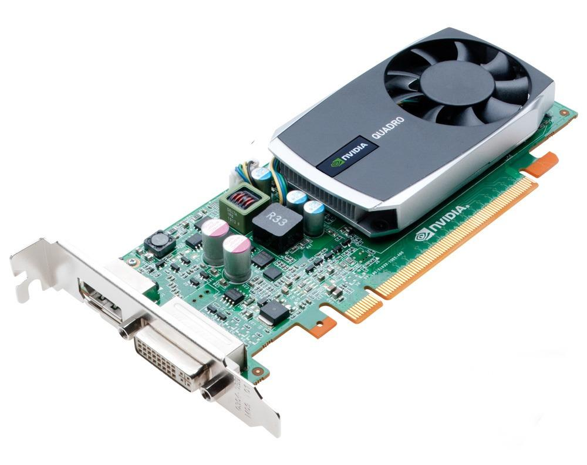

Tarjeta de Video
Una Tarjeta de Video es un elemento de los ordenadores que descifra y decodifica el lenguaje que se produce dentro del procesador del equipo para convertirla en símbolos, imágenes y representaciones que pueden ser entendidas por el usuario final, de esta manera, la tarjeta de video es el dispositivos computarizado que procesa el resultado final que el sistema elabora para la computadora para quien la usa. Las tarjetas de video son conocidas como tarjetas gráficas o tarjetas aceleradoras de video, estas pueden estar integradas a la placa central (GPU: “Unidad de Procesamiento Gráfico”) o ser un periférico que le brinde al terminal un rendimiento especial o más óptimo.
